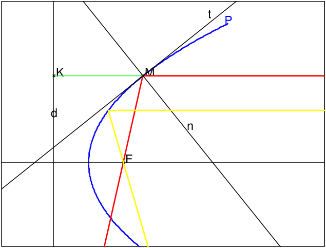
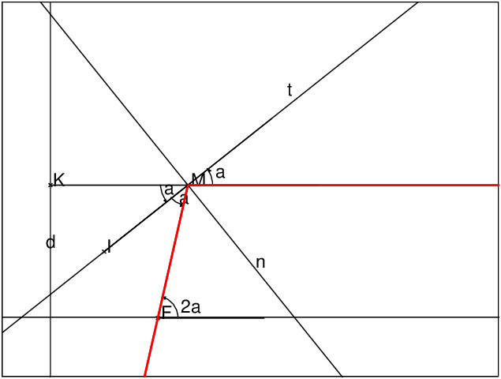
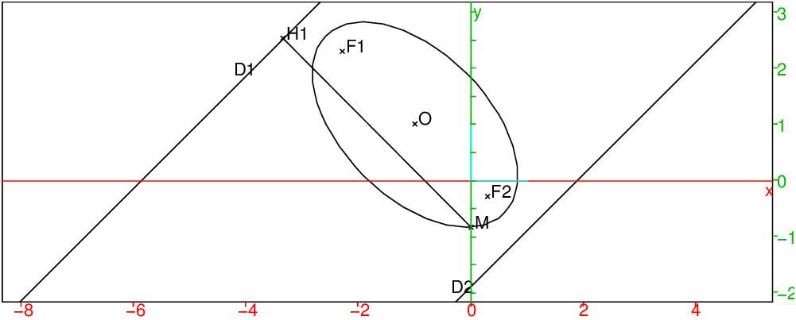
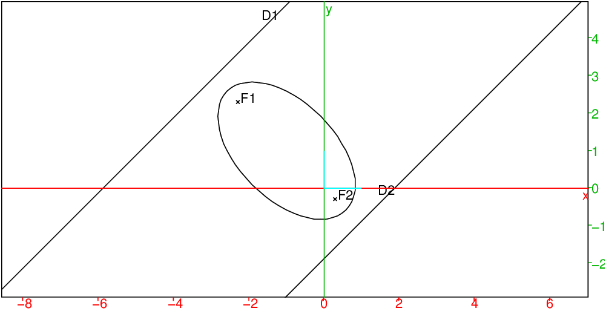
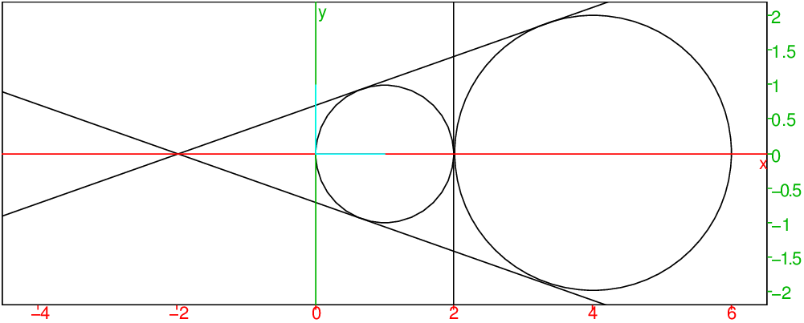
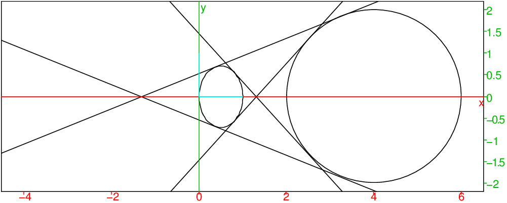
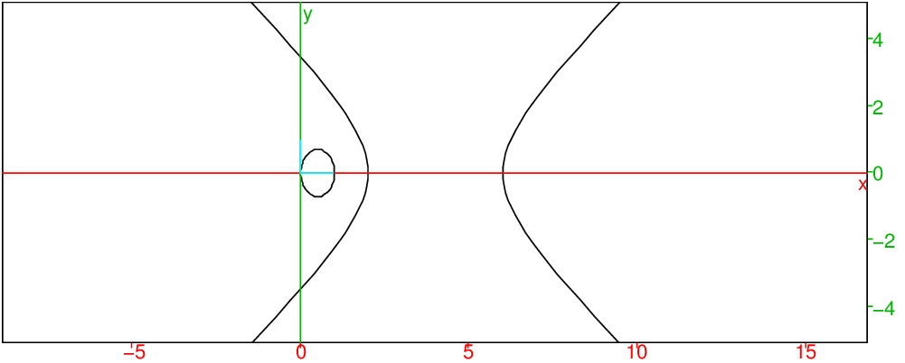
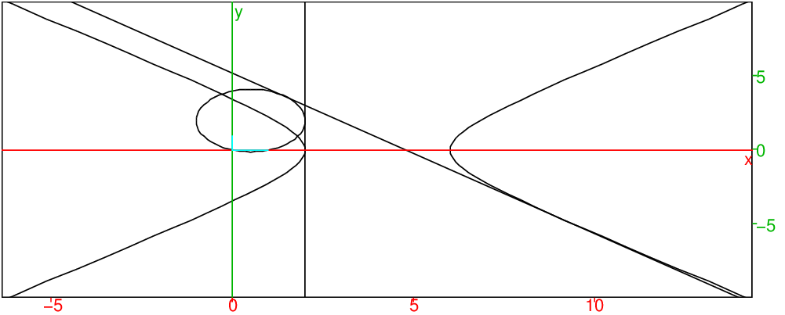
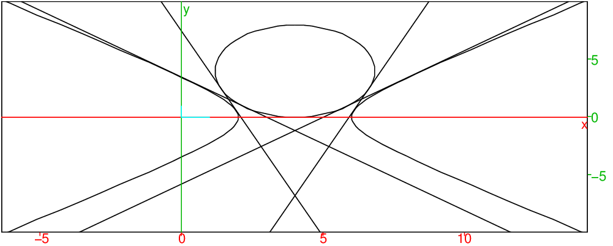

Ce sont les courbes qui ont comme équation, dans un repère Oxy, P(x,y)=0 où P est un polynôme de degré inférieur ou égal à 2.
L’équation cartésienne d’une droite non parallèle à l’axe Oy est
y=a*x+b.
Avec Xcas
Si on veut voir l’influence de a et b on tape dans un écran de
géométrie :
a:=element(-4..5); b:=element(-4..2); droite(y=a*x+b);
L’équation cartésienne d’une droite quelconque est m*x+n*y+p=0 : son
vecteur normal est m+i*n et elle passe par le point −i*p/n si n≠ 0 ou
par le point −p/m si m≠ 0 (on suppose m*n ≠ 0).
L’équation paramétrique d’une droite passant par le point A=x0+i*y0 et
parallèle au vecteur V=u+i*v est x(t)=x0+u*t, y(t)=y0+v*t (on suppose
u*v ≠ 0).
Avec Xcas
si on veut voir l’influence de A, u et v on tape dans un écran de
géométrie :
A:=point(0,1); u:=element(-4..5); v:=element(-4..2); plotparam(re(A)+u*t+i*(im(A)+v*t),t); plotparam(evalc(A+(u+i*v)*t),t) //plotparam(A+(a+i*b)*t,t);
L’équation paramétrique d’une droite passant par le point A=x0+i*y0 et
le point B=x1+i*y1 est
x(t)=x0+t*x1/1+t, y(t)=y0+t*y1/1+t
(si t ≠ −1).
Avec Xcas
Si on veut voir l’influence de A et B on tape dans un écran de
géométrie :
A:=point(1,0); B:=point(0,1); plotparam(affixe(A+B*t)/(1+t),t); m:=element(-4..5); M:=point((A+B*m)/(1+m));
L’équation cartésienne d’un cercle centré à l’origine et
de rayon |a| est :
x2+y2=a2.
Avec Xcas
Si on veut voir l’influence de a on tape dans un écran de
géométrie :
a:=element(0..5); plotfunc(sqrt(a^2-x^2),x); plotfunc(-sqrt(a^2-x^2),x);
L’équation cartésienne d’un cercle centré en A=x0+i*y0 et
de rayon |a| est (x−x0)2+(y−y0)2=a2.
L’équation paramétrique d’un cercle centré en A=x0+i*y0 et
de rayon |a| est
x(t)=x0+|a|*cos(t), y(t)=y0+|a|*sin(t).
Avec Xcas
Si on veut voir l’influence de A et de a on tape dans un écran de
géométrie :
A:=point(0,1); a:=element(0..5); plotparam(affixe(A)+a*cos(t)+i*a*sin(t),t)
Pour avoir un demi-cercle pour t allant de −π/2 à π/2, on tape dans un écran de géométrie :
A:=point(0,1); a:=element(0..5); plotparam(affixe(A)+a*cos(t)+i*a*sin(t),t=-pi/2..pi/2)
L’équation polaire d’un cercle centré à l’origine est
r=|a|.
Avec Xcas
Si on veut voir l’influence de a on tape dans un écran de
géométrie :
A:=point(0,1); a:=element(0..5); plotpolar(a,t);
Le cercle centré en A=x0+i*y0 est le translaté du précédent dans
la translation de vecteur l’affixe du point A.
Si on veut voir l’influence de A et de a on tape dans un écran de
géométrie :
A:=point(0,1); a:=element(0..5); translation(affixe(A),plotpolar(a,t))
L’équation polaire d’un cercle passant par l’origine et de diamètre OA=d
avec (Ox,OA)=t0
r=d*cos(t−t0).
Avec Xcas
Si on veut voir l’influence de a on tape dans un écran de
géométrie :
A:=point(0,1); a:=affixe(A); plotpolar(abs(a)*cos(t-arg(a)),t);
Le cercle centré en B=x0+i*y0 est le translaté du précédent dans
la translation de vecteur l’affixe du point B.
Avec Xcas
Si on veut voir l’influence de A et de B on tape dans un écran de
géométrie :
A:=point(1,0); B:=point(0,1); ba:=affixe(A-B); translation(affixe(B),plotpolar(abs(ba)*cos(t-arg(ba)),t));
L’équation cartésienne d’une ellipse centrée en A=x0+i*y0
et de demi-axes parallèles aux axes et de longueur |a| et |b| est :
(x−x0)2/a2+(y−y0)2/b2=1
on a a2=b2+c2 et AF=AF′=|c| si F et F′ sont les foyers.
L’équation paramétrique d’une ellipse centrée en A=x0+i*y0, de
demi-axes parallèles aux axes et de longueur a>0 et b>0 est :
x(t)=x0+a*cos(t), y(t)=y0+b*sin(t).
Avec Xcas
Si on veut voir l’influence de A et de a on tape dans un écran de
géométrie :
A:=point(0,1); a:=element(0..5); plotparam(affixe(A+a*cos(t)+i*b*sin(t)),t)
Remarque
On peut aussi utiliser les commandes :
ellipse, conique et conique_reduite.
L’équation cartésienne d’une hyperbole centrée en A=x0+i*y0,
de demi-axes parallèles aux axes et et de longueur |a| et |b| est :
(x−x0)2/a2−(y−y0)2/b2=1 (on a a2=b2+c2 et
AF=AF′=|c| si F et F′ sont les foyers).
L’équation paramétrique d’une hyperbole centrée en A=x0+i*y0, de
demi-axes parallèles aux axes et de longueur a>0 et b>0 est:
x(t)=x0+a*cosh(t), y(t)=y0+a*sinh(t).
Avec Xcas
Si on veut voir l’influence de A et de a on tape dans un écran de
géométrie :
A:=point(0,1); a:=element(0..5); plotparam(affixe(A+a*cosh(t)+i*b*sinh(t)),t)
Remarque
On peut aussi utiliser les commandes :
hyperbole, conique et conique_reduite.
L’équation cartésienne d’une parabole de sommet A=x0+i*y0 et
de directrice d d’équation x=a=x0−p/2 (où p/2 est la distance de A
à d) a pour équation :
(y−y0)2=4x(x0−a)−x0(x0−a)=4(x−x0)(x0−a)=2*p*(x−x0)
Par exemple, si p=3, x0=1 et y0=2, son sommet est A:=point(1,2),
son foyer F est défini par F:=point(1+3/2,2) et son
équation est :
(y−2)2=6*(x−1)
L’équation paramétrique de cette parabole est :
x0+t2/(2*p)+i(t+y0)
Avec Xcas
Si on veut voir l’influence de A et de p, on tape dans un écran de
géométrie :
A:=point(0,1); p:=element(-5..5); plotparam(affixe(A)+t^2/(2*p)+i*t,t)
Remarque
On peut aussi utiliser les commandes :
parabole, conique et conique_reduite.
En géométrie plane la définition est :
On appelle parabole le lieu géométrique du centre M d’un cercle tangent
à une droite d et passant par un point F.
d est la directrice de la parabole
F est le foyer de la parabole
la distance de F à d est le paramètre p de la parabole.
Une condition nécessaire et suffisante pour que M appartienne à la
parabole de foyer F et de directrice d est que M est équidistant de F
et de d.
En tout point la parabole admet une tangente.
Soit K est la projection de m sur d. La tangente en M est la
médiatrice du segment FK où K est la projection de m sur d et c’est
aussi la bissectrice de l’angle FMK.
Soit (P) une parabole de foyer F et de directrice d.
On suppose que des rayons lumineux perpendiculaires à d arrivent sur P
du même côté que F.
Alors tous les rayons réfléchis par la parabole perpendiculairement à d
passent par le foyer F.


Soient (x,y) les coordonnées de M et a=KMI=IMF.
On suppose y>0 i.e y′>0 car le problème est symétrique par rapport
à Fx.
On a donc :
y′=tan(a) (c’est la pente de la tangente t)
tan(2*a)=y/x=2tan(a)/1−tan(a)22y′/1−y′2
donc
| yy′2+2y′x−y=0 |
ou puisque l’on a supposé y′>0
| y′= |
|
ou
| yy′=−x+ | √ |
|
On obtient une équation différentielle à résoudre.
Résolution de yy′=−x+√x2+y2 par changement de variable
On a :
yy′+x=√x2+y2
Le premier membre est la dérivée de (y2+x2)/2, on pose donc :
z=(y2+x2)/2 et l’équation différentielle devient :
z′=√2z ou z′/√2z=1donc
√2z=x+p où p=Cste
donc x2+y2=(x+p)2
On trouve l’équation de la parabole de foyer l’origine F et de directrice
d d’équation x=−p.
Résolution de yy′=−x+√x2+y2 géométriquement
On a :
KM=MFi=√x2+y2i
donc OK=OM+MK a pour coordonnées :
xK=x−√x2+y2 et yK=y
Montrons que lorsque M se déplase sur le courbe, xK reste constant.
xK est une fonction de x dérivable de dérivee :
x′K=1−x+y*y′/√x2+y2=√x2+y2−x−y*y′/√x2+y2
On remplace yy′ par sa valeur et on obtient :
x′K=√x2+y2−x−(−x+√x2+y2)/√x2+y2=0
Donc xK=−p et M est sur une parabole de foyer F et de directrice d
d’équation x=−p.
Exercice :
Déterminer les foyers de la conique d’équation dans le reère Oxy :
| −2x2−2*x*y−2*y2−2*x+2*y+3=0 |
On tape :
^2-2*x*y-2*y^2-2*x+2*y+3,[x,y])On obtient :
^2-3*y^2+5,
[[-1+i+((-(sqrt(2)))/2+((i)*sqrt(2))/2)*(sqrt(5)*cos(t)+
Dans le nouveau repère l’équation de l’ellipse est :
X2/5+Y2/5/3=1
On a donc a2=5, b2=5/3 et c2=a2−b2=10/3
On tape :
c:=sqrt(5-5/3)
On obtient (sqrt(30))/3
L’origine du nouveau repère est O1=point(-1+i) et la matrice de
passage est :
P=[[−√2/2,−√2/2],[√2/2,−√2/2]]
On tape pour définir la matrice de passage :
P:=[[-sqrt(2)/2,-sqrt(2)/2],[sqrt(2)/2,-sqrt(2)/2]]
On tape pour définir les foyers :
F1:=point(P*[c,0]+[-1,1])
F2:=point(P*[-c,0]+[-1,1])
On tape :
coordonnees(F1)
On obtient :
[(-2*sqrt(15))/6-1,(sqrt(15)*2)/6+1]
On tape :
coordonnees(F2)
On obtient :
[(2*sqrt(15))/6-1,-((sqrt(15)*2)/6)+1]
La directrice D1 a pour équation dans le nouveau repère
X=a2/c=√30/2
Pour avoir dans le repère Oxy, l’équation de D1, on tape :
A:=normal(P*[sqrt(30)/2,0]+[-1,1])
On obtient :
[(-4*sqrt(15)-8)/8,(4*sqrt(15)+8)/8]
On tape :
B:=normal(P*[sqrt(30)/2,sqrt(2)]+[-1,1])
On obtient :
[(-4*sqrt(15)-16)/8,(4*sqrt(15))/8]
On tape :
D1:=droite(point(A),point(B))
equation(D1)
On obtient :
y=(x+sqrt(15)+2)
La directrice D2 a pour équation dans le nouveau repère
X=a2/c=−√30/2
Pour avoir dans le repère Oxy, l’équation de D2, on tape :
C:=normal(P*[-sqrt(30)/2,0]+[-1,1])
On obtient :
[(sqrt(15)-2)/2,(-(sqrt(15))+2)/2]
On tape :
D:=normal(P*[-sqrt(30)/2,sqrt(2)]+[-1,1])
On obtient :
[(sqrt(15)-4)/2,(-(sqrt(15)))/2]
On tape :
D2:=droite(point(C),point(D))
equation(D2)
On obtient :
y=(x-(sqrt(15))+2)
On tape :
conique(-2*x^2-2*x*y-2*y^2-2*x+2*y+3,[x,y]);
F1:=F1;F2:=F2;D1:=D1;D2:=D2;O:=point(-1+i);
M:=point(i*-1/2*(-1+sqrt(7)));
On obtient :

On rappelle l’énoncé :
Déterminer les foyers de la conique d’équation dans le reère Oxy :
| −2x2−2*x*y−2*y2−2*x+2*y+3=0 |
On pose :
f(x,y)=−2x2−2*x*y−2*y2−2*x+2*y+3 et
g(x,y,t)=t2f(x/t,y/t)
On tape pour définir la fonction f :
f(x,y):=-2*x^2-2*x*y+-2*y^2-2*x+2*y+3
On obtient :
(x,y)->-2*x^2-2*x*y-2*y^2-2*x+2*y+3
On tape pour définir la fonction g :
g:=unapply(normal(t^2*f(x/t,y/t)),[x,y,t])
On obtient :
(x,y,t)->3*t^2-2*t*x+2*t*y-2*x^2-2*x*y-2*y^2
L’équation tangentielle est la condition nécessaire et suffisante sur
u,v,w pour qu’une droite d’équation ux+vy+w=0 soit tangente à cette
conique.
En coordonnées homogènes l’équation de la tangente à la courbe
g(x,y,t)=0 au point x0,y0,t0 est :
xgx′(x0,y0,t0)+ygy′(x0,y0,t0)+tgt′(x0,y0,t0)=0
On tape :
g1:=normal(diff(g(x,y,t),x)/2)
On obtient :
-t-2*x-y
On tape :
g2:=normal(diff(g(x,y,t),y)/2)
On obtient :
t-x-2*y
On tape :
g3:=normal(diff(g(x,y,t),t)/2)
On obtient :
3*t-x+y
Donc xg1+yg2+tg3=0 est tangente à la courbe g(x,y,t)=0.
On cherche la
condition nécessaire et suffisante sur u,v,w pour que la droite
d’équation ux+vy+w=0 soit tangente à cette conique.
On cherche donc à résoudre les équations lin’eaires en x,y,t :
g1=u,g2=v,g3=w.
On tape pour avoir x,y,z en fonction de u,v,w :
L:=linsolve([g1-u,g2-v,g3-w],[x,y,t])
On obtient :
[-7/15*u-(-2)/15*v-1/5*w,2/15*u+(-7)/15*v+1/5*w,
-1/5*u-(-1)/5*v-(-1)/5*w]
On tape pour définir l’équation tangentielle G(u,v,w)=0 de la conique
d’équation g(x,y,t)=0 :
G:=unapply(numer(g(L[0],L[1],L[2])),[u,v,w])
On obtient :
(u,v,w)->-7*u^2+4*u*v-6*u*w-7*v^2+6*v*w+3*w^2
Pour une courbe, un foyer au sens de Plücker est un point d’où l’on peut
mener deux tangentes isotropes à la courbe.
Une isotrope est une droite de pente i ou de pente −i, par exemple si
F1=point(x1+i*y1), la droite :
i*x−y−i*x1+y1=0 est une isotrope qui passe par F1.
Donc pour que F1 soit un foyer il faut que :
G(i,−1,w1)=0 avec w1=−i*x1+y1.
Pour avoir les foyers, on tape :
C:=normal(G(i,-1,w1))
On obtient :
3*w1^2+(-6-6*i)*w1-4*i
On tape pour déterminer w1=−i*x1+y1 tel que G(i,−1,w1)=0 :
LF:=normal(csolve(C,w1))
On obtient :
[((1+i)*sqrt(15)+3+3*i)/3,((-1-i)*sqrt(15)+3+3*i)/3]
Il y a donc 2 foyers F1 et F2 qui ont comme coordonnées x1,y1 et
x2,y2.
On tape pour avoir les coordonnées de F1 :
x1:=-im(LF[0]);y1:=re(LF[0]);
On obtient :
-((sqrt(15)+3)/3),(sqrt(15)+3)/3
Donc :
| F1= |
|
On tape pour avoir les coordonnées de F2 :
x2:=-im(LF[1]);y2:=re(LF[1]);
On obtient :
-((-(sqrt(15))+3)/3),(-(sqrt(15))+3)/3
Donc
| F2= |
|
La directrice d’une conique propre associée à un foyer F est la polaire
de F.
La polaire d’un point x0,y0,t0 d’une conique g(x,y,t)=0 a pour
équation homogène :
x*gx0′+y*gy0′+t*gt0′=0
Pour avoir la directrice D1 associée au foyer F1 de coefficients
u1,v1,w1, on tape :
u1:=normal(subst(g1,[x=x1,y=y1,t=1]))
On obtient :
sqrt(15)/3
On tape :
v1:=normal(subst(g2,[x=x1,y=y1,t=1]))
On obtient :
-sqrt(15)/3
On tape :
w1:=normal(subst(g3,[x=x1,y=y1,t=1]))
On obtient :
(2*sqrt(15)+15)/3
Donc la directrice D1 associée au foyer F1 a pour équation :
| x | √ |
| −y | √ |
| +2 | √ |
| +15=0 |
Pour avoir la directrice D2 associée au foyer F2 de coefficients
u2,v2,w2, on tape :
u2:=normal(subst(g1,[x=x2,y=y2,t=1]))
On obtient :
-(sqrt(15))/3
On tape :
v2:=normal(subst(g2,[x=x2,y=y2,t=1]))
On obtient :
sqrt(15)/3
On tape :
w2:=normal(subst(g3,[x=x2,y=y2,t=1]))
On obtient :
(-2*sqrt(15)+15)/3
Donc la directrice D2 associée au foyer F2 a pour équation :
| −x | √ |
| +y | √ |
| −2 | √ |
| +15=0 |
On fait le dessin, on tape :
conique(f(x,y));F1:=point(x1+i*y1);F2:=point(x2+i*y2);
D1:=droite(u1*x+v1*y+w1=0);D2:=droite(u2*x+v2*y+w2=0)
On obtient :

| e= |
|
On tape :
M:=point(i*(1-sqrt(7))/2);
H1:=projection(D1,M)
e2:=normal(longueur2(M,F1)/longueur2(M,H1))
On obtient e2 :
2/3
donc
| e= |
|
On rappelle l’énoncé :
Déterminer les foyers de la conique d’équation dans le reère Oxy :
| f(x,y)=−2x2−2*x*y−2*y2−2*x+2*y+3=0 |
On écrit le programme conique2fd qui a comme argument la fonction de
2 variables qui définit la conique.
On tape dans l’éditeur de programmes :
conique2fd(f):={
local t,x,y,g,g1,g2,g3,L,G,u,v,w,w1,C,
LF,x1,x2,y1,y2,u1,u2,v1,v2,w1,w2,s;
purge(x);purge(y);purge(t);
purge(u);purge(v);purge(w);
g:=unapply(normal(t^2*f(x/t,y/t)),[x,y,t]);
g1:=normal(diff(g(x,y,t),x)/2);
g2:=normal(diff(g(x,y,t),y)/2);
g3:=normal(diff(g(x,y,t),t)/2);
L:=linsolve([g1-u,g2-v,g3-w],[x,y,t]);
G:=unapply(numer(g(L[0],L[1],L[2])),[u,v,w]);
C:=normal(G(i,-1,w));
LF:=normal(csolve(C,w));
s:=size(LF);
si s==0 alors
return[];
fsi;
x1:=-im(LF[0]);y1:=re(LF[0]);
u1:=normal(subst(g1,[x=x1,y=y1,t=1]));
v1:=normal(subst(g2,[x=x1,y=y1,t=1]));
w1:=normal(subst(g3,[x=x1,y=y1,t=1]));
si s==1 alors
return [normal([x1,y1]),numer(u1*x+v1*y+w1)];
fsi;
x2:=-im(LF[1]);y2:=re(LF[1]);
u2:=normal(subst(g1,[x=x2,y=y2,t=1]));
v2:=normal(subst(g2,[x=x2,y=y2,t=1]));
w2:=normal(subst(g3,[x=x2,y=y2,t=1]));
return [normal([x1,y1]),numer(u1*x+v1*y+w1)],
[normal([x2,y2]),numer(u2*x+v2*y+w2)];
}:;
Puis, on tape :
f(x,y)=-2x^2-2*x*y-2*y^2-2*x+2*y+3
conique2fd(f)
On obtient :
[[(-(sqrt(15))-3)/3,(sqrt(15)+3)/3],
sqrt(15)*x-sqrt(15)*y+2*sqrt(15)+15],
[[(sqrt(15)-3)/3,(-(sqrt(15))+3)/3],
-sqrt(15)*x+sqrt(15)*y-2*sqrt(15)+15]
On rappelle l’énoncé :
Déterminer les foyers de la conique d’équation dans le repère Oxy :
| f(x,y)=−2x2−2*x*y−2*y2−2*x+2*y+3=0 |
On écrit le programme conique2fd qui a comme argument la fonction de 2 variables qui définit la conique.
On tape dans l’éditeur de programmes:
conique2fdir(f):={
local t,x,y,g,A,A1,B,C,g,L,G,u,v,w,w1,
LF,x1,x2,y1,y2,u1,u2,v1,v2,w1,w2,s;
purge(x);purge(y);purge(t);
purge(u);purge(v);purge(w);
g:=unapply(normal(t^2*f(x/t,y/t)),[x,y,t]);
A:=q2a(g(x,y,t),[x,y,t]);
si det(A)!=0 alors B:=inverse(A) else return 0 fsi;
G(u,v,w):=g(op(B*[u,v,w]));
C:=normal(G(i,-1,w));
LF:=normal(csolve(C,w));
s:=size(LF);
si s==0 alors
return[];
fsi;
x1:=-im(LF[0]);y1:=re(LF[0]);
A1:=A*[x1,y1,1];
u1:==normal(A1[0]);
v1:=normal(A1[1]);
w1:=normal(A1[2]);
si s==1 alors
return [normal([x1,y1]),numer(u1*x+v1*y+w1)];
fsi;
x2:=-im(LF[1]);y2:=re(LF[1]);
A1:=A*[x2,y2,1];
u2:=normal(A1[0]);
v2:=normal(A1[1]);
w2:=normal(A1[2]);
return [normal([x1,y1]),numer(u1*x+v1*y+w1)],
[normal([x2,y2]),numer(u2*x+v2*y+w2)];
}
:;
Puis, on tape :
f(x,y):=-2x^2-2*x*y-2*y^2-2*x+2*y+3
conique2fdir(f)
On obtient :
[[(-(sqrt(15))-3)/3,(sqrt(15)+3)/3],
sqrt(15)*x-sqrt(15)*y+2*sqrt(15)+15],
[[(sqrt(15)-3)/3,(-(sqrt(15))+3)/3],
-sqrt(15)*x+sqrt(15)*y-2*sqrt(15)+15]
On utilise l’équation tangentielle de ces 2 coniques :
tangentes(f,g):={
local x,y,t,u,v,w,A,A1,B,B1,F,G,FT,GT,D,k,L0,L1;;
purge(x);purge(y);purge(t);
purge(u);purge(v);purge(w);
F:=unapply(normal(t^2*f(x/t,y/t)),[x,y,t]);
A:=q2a(F(x,y,t),[x,y,t]);
si det(A)!=0 alors A1:=inverse(A) else return 0 fsi;
FT(u,v,w):=F(op(A1*[u,v,w]));
G:=unapply(normal(t^2*g(x/t,y/t)),[x,y,t]);
B:=q2a(G(x,y,t),[x,y,t]);
si det(B)!=0 alors B1:=inverse(B) else return 0 fsi;
GT(u,v,w):=G(op(B1*[u,v,w]));
L0:=solve(normal(FT(u,v,0),GT(u,v,0)),[u,v]);
L1:=solve(normal(FT(u,v,1),GT(u,v,1)),[u,v]);
D:=NULL;
if (L0[0]==[0,0]) {L0:=tail(L0);}
for (k:=0;k<size(L0);k++){
D:=D, droite(L0[k,0]*x+ L0[k,1]*y);
}
for (k:=0;k<size(L1);k++){
D:=D,droite( L1[k,0]*x+ L1[k,1]*y+1)
;}
return D;
}
:;
On tape :
f(x,y):=x^2+y^2-2*x
g(x,y):=x^2+y^2-8x+12
cercle(f(x,y)),cercle(g(x,y)),tangentes(f,g)
On obtient :

^2+y^2-2*x^2+y^2-8*x+12
^2+y^2-2*x^2-y^2-8x+12
^2+y^2-2*x-4*y^2-y^2-8x+12
On tape :^2+y^2-16*x-8*y+32^2-y^2-8x+12
L’ellipse
Soient F1 et F2 les foyers et M0 un point de l’ellipse.
On a :
a=(M0F1+M0F2)/2
M0F12−M0F22=2a*(M0F1−M0F2)
donc puisque pour qu’un point M soit un point de l’ellipse on a :
MF1+MF2=2a et
MF1−MF2=(MF12−MF22)/(2a) on a :
MF1=a+(MF12−MF22)/(4*a)
ou encore :
MF12=(a+(MF12−MF22)/(4*a))2
L’équation de l’ellipse est donc :
MF12−(a+(MF12−MF22)/(4*a))2=0 avec a=(M0F1+M0F2)/2.
L’hyperbole
Soient F1 et F2 les foyers et M0 un point de l’hyperbole.
On a :
a=|M0F1−M0F2|/2
|M0F12−M0F22|=2a*(M0F1+M0F2)
donc puisque pour qu’un point M soit un point de l’hyperbole on a :
MF1−MF2=2a*s (avec s=+1 ou s=−1) et
MF1+MF2=(MF12−MF22)/(2*a*s) on a :
MF1=s*(a+(MF12−MF22)/(4*a))
ou encore :
MF12=(a+(MF12−MF22)/(4*a))2
L’équation de l’hyperbole est donc :
MF12−(a+(MF12−MF22)/(4*a))2=0 avec a=|M0F1−M0F2|/2.
On tape le programme :
eqcon2fm(F1,F2,M0,s):={
local x1,x2,y1,y2,x0,y0,x,y,ae,ah,a,M,eq,l1,l2,l,l3;
x1,y1:=coordonnees(F1);
x2,y2:=coordonnees(F2);
x0,y0:=coordonnees(M0);
l3:=longueur2(F1,F2)/4;
ae:=(longueur(M0,F1)+longueur(M0,F2))/2;
ah:=abs(longueur(M0,F1)-longueur(M0,F2))/2
si s=="ellipse" alors a:=simplify(ae); sinon a:=simplify(ah); fsi;
si simplify(a^2-l3)==0 alors si s=="ellipse" alors print("segment");sinon
print("2 demi-droites");fsi;fsi
purge(x,y);
M:=point(x,y);
l2:=longueur2(M,F1);
l:=(l2-longueur2(M,F2))/(4*a);
l1:=simplify(a+l);
eq:=numer(simplify(l2-l1^2));
si simplify(a^2-l3)>0 alors print("ellipse centre "+(F1+F2)/2+" a="+a);
sinon
si simplify(a^2-l3)<0 alors print("hyperbole centre "+(F1+F2)/2+" a="+a);
sinon
eq:=factors(eq)[0];
fsi;
fsi;
return eq;
}:;
On tape :
eqcon2fm(point(1-i),point(i),point(1+i),"ellipse")
On obtient :
ellipse centre 1/2 a=3/2
8*x^2+4*x*y-8*x+5*y^2-2*y-7
On tape :
eqcon2fm(point(1-i),point(i),point(1+i),"hyp")
On obtient :
hyperbole centre 1/2 a=(sqrt(5))/4
16*x^2+256*x*y-16*x-176*y^2-128*y+79
On tape :
eqcon2fm(point(1-i),point(i),point(1/4+i/2),"ellipse")
On obtient :
segment
2*x+y-1
On tape :
eqcon2fm(point(1-i),point(i),point(-1/4+3*i/2),"hyp")
On obtient :
2 demi droites
2*x+y-1
On a donc comme précédement :
L’équation de l’ellipse ou de l’hyperbole est :
MF12−(a+(MF12−MF22)/(4*a))2=0.
On tape le programme :
eqcon2fa(F1,F2,a):={
local x1,x2,y1,y2,x,y,M,eq,l1,l2,l,l3;
x1,y1:=coordonnees(F1);
x2,y2:=coordonnees(F2);
purge(x,y);
M:=point(x,y);
l2:=longueur2(M,F1);
l:=(l2-longueur2(M,F2))/(4*a);
l1:=simplify(a+l);
eq:=numer(simplify(l2-l1^2));
l3:=longueur2(F1,F2)/4;
si simplify(a^2-l3)>0 alors print("ellipse centre "+(F1+F2)/2+" a="+a);
sinon
si simplify(a^2-l3)<0 alors print("hyperbole centre "+(F1+F2)/2+" a="+a);
sinon
eq:=factors(eq)[0];
print("segment ou 2 demi droites")
fsi;
fsi;
return eq;
}:;
On tape :
eqcon2fa(point(1-i),point(i),sqrt(5)/2))
On obtient :
segment ou 2 demi droites
2*x+y-1
On tape :
eqcon2fa(point(1-i),point(i),sqrt(5)))
On obtient :
ellipse centre 1/2 a=sqrt(5)
76*x^2+16*x*y-76*x+64*y^2-8*y-281
On tape :
eqcon2fa(point(1-i),point(i),sqrt(5)/3))
On obtient :
hyperbole centre 1/2 a=(sqrt(5))/3
396*x^2+1296*x*y-396*x-576*y^2-648*y+599